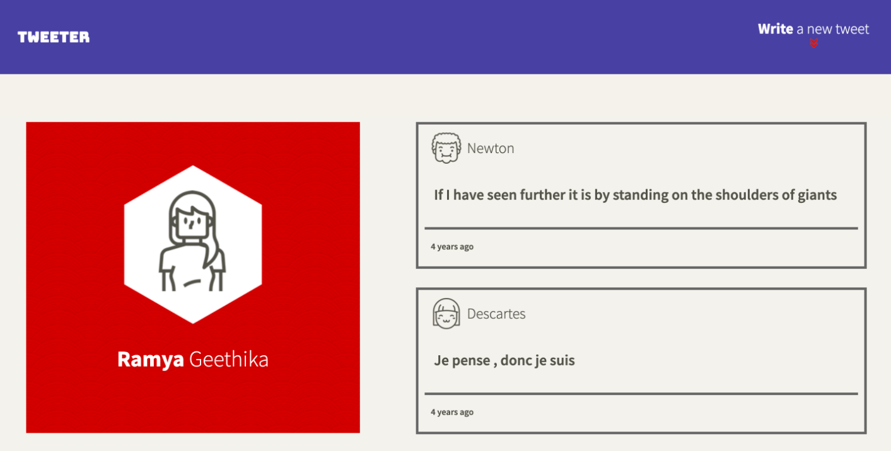

Tweeter

It's a client-side Single Page App (SPA) and it communicates with a server via AJAX. It have a header, which contains the user's avatar and it's name, on the left and after the avatar handle, on the right have a body, which contains the tweet text have a footer, which displays how long ago the tweet was created, on the left "Flag", "Re-tweet" and "Like" icons upon hovering over the tweet, on the right.
The Character Counter is updated to show how many characters a user may still type, The Character Counter turns red (or similar) when more than 140 characters have been typed into the Compose Tweet textarea, and it shows how many characters over the 140 limit have been typed (using a negative number).
When a user submits an invalid tweet an appropriate error message is displayed. When a user submits a valid tweet, the list of tweets is refreshed, the Compose Tweet textarea is cleared, and the Character Counter is reset (to 140).
To build this application I have used HTML, CSS, JS, jQuery and AJAX on the front-end, and Node, Express and MongoDB on the back-end.
